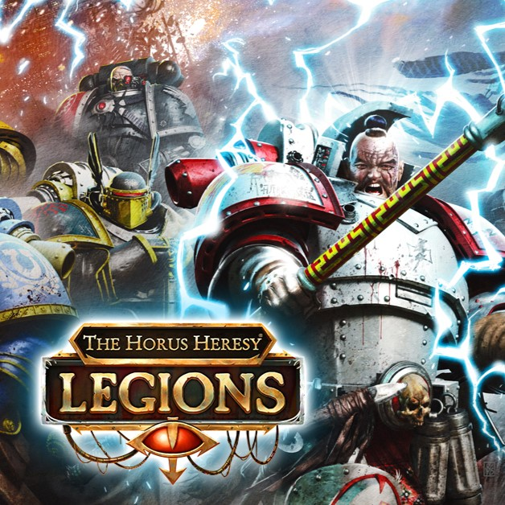
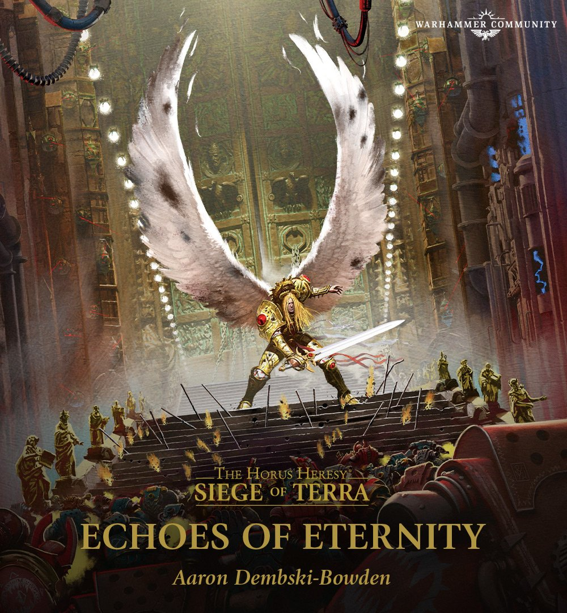
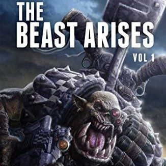
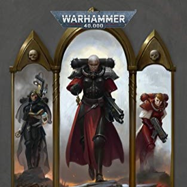
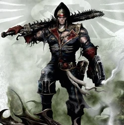

De literatuur van Warhammer 40k wordt al sinds 1997 geschreven er bestaan over de 400 boeken in de setting.
Maar de verhalen zijn vaak geschreven op verschillende momenten en zijn dus heel verwarrend om te volgen en nog verwarrender om in te starten.
Als je het u nog simpeler wil maken er zijn van meeste boeken audio opnames gebeurt die oprecht geweldig zijn.
Hieronder zal u 4 series vinden die enorm belangrijk zijn om te hebben gelezen en nog belangrijker zijn om mee te starten.
the horus heresy

Horus heresy legioen in een strijd op Isthvan IV
De "Horus Heresy" serie speelt zich af in het jaar 30k het begin van het einde van al dat mensheid wou bereiken.
Dit is een aanrader om te lezen sinds het een goed beeld geeft van alles in de setting.
Horus Rising
False Gods
Galaxy in Flames
The Flight of the Eisenstein
Fulgrim by Graham
Descent of Angels
Legion
Battle for the Abyss
Mechanicum
Tales of Heresy
Fallen Angels
A Thousand Sons
Nemesis
The First Heretic
Prospero Burns
Age of Darkness
The Outcast Dead
Deliverance Lost
Know No Fear
The Primarchs
Fear to Tread
Shadows of Treachery
Angel Exterminatus
Betrayer
Mark of Calth
Vulkan Lives
The Unremembered Empire
Scars
Vengeful Spirit
The Damnation of Pythos
Legacies of Betrayal
Deathfire
War Without End
Pharos
Eye of Terra
The Path of Heaven
The Silent War
Angels of Caliban
Praetorian of Dorn
Corax
The Master of Mankind
Garro
Shattered Legions
The Crimson King
Tallarn
Ruinstorm
Old Earth
The Burden of Loyalty
Wolfsbane
Born of Flame
Slaves to Darkness
Heralds of the Siege
Titandeath
The Buried Dagger
siege of terra

Sanguinius houdt de Eternity Gate tegen de Daemons
Het vervolg en het einde van de "Horus Heresy" serie dit zich maar een paar jaar na het einde zich afspeelt.
Dit is gewoon een fantastisch einde naar een setup die hiervoor opgezet is.
The Solar War
The Lost and the Damned
The First Wall
Saturnine
Mortis
Warhawk
Echoes of Eternity
the beast arises

En Ork schreeuwt tegen zijn tegenstander onder het beleid van "The Beast"
Het Imperium is duisternis gevallen en een nieuw kwaad is aan het opkomen.
Wie zal tegen dit kwaad oprijzen?
Dit vindt je uit in deze serie een sprong tussen het oude verleden van de "Horus Heresy" en het hede.
I Am Slaughter
Predator, Prey
The Emperor Expects
The Last Wall
Throneworld
Echoes of the Long War
The Hunt for Vulkan
The Beast Must Die
Watchers in Death
The Last Son of Dorn
Shadow of Ullanor
The Beheading
adepta sororitas

Sororitas heilig tafereel
Deze serie geeft een beeld van hoe het Imperium gevallen is in religeuse doctrine.
Een verval van de menselijkheid van ons ooit trots ras.
Faith and Fire
Red and Black
Hammer and Anvil
Celestine
Our Martyred Lady
Requiem Infernal
Mark of Faith
Broken Saints
ciaphas cain

Ciaphas staat victorious over het slagveld met de Orks
De verhalen van Ciaphas Cain "Hero Of The Imperium" de lafaard die zou uitgroeien tot een legende.
Deze serie is aan te raden voor de sfeer en plezier dat het brengt in de anderzijds duistere setting.
Dit is tot nu toe mijn favoriete serie en ik raad hem atlijd aan.
For The Emperor
Caves of Ice
The Traitor's Hand
Death or Glory
Duty Calls
Cain's Last Stand
The Emperor's Finest
The Last Ditch
The Greater Good
Choose Your Enemies
persoonlijke keuze
Dit zijn mijn persoonlijke keuze's die ik zou aanraden om te lezen.

Comments